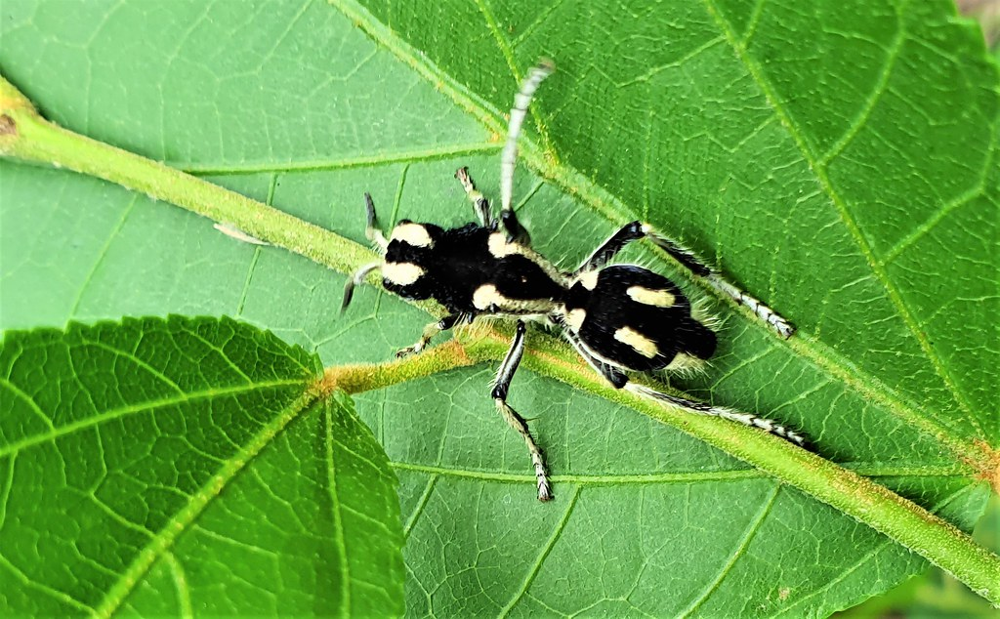

ℂ𝔸ℝ𝔸ℂ𝕋𝔼ℝ𝕀́𝕊𝕋𝕀ℂ𝔸𝕊 𝔾𝔼ℝ𝔸𝕀𝕊
・A característica mais marcante da formiga-panda é a sua coloração, que lembra a de um urso-panda. O inseto é branco
aveludado na cabeça, exceto nos olhos, com manchas pretas e brancas no corpo. Essa coloração marcante é aposemática, servindo como um aviso aos predadores sobre a sua picada dolorosa e poderosa.
・Em ambos os sexos, as antenas e as patas são cobertas por espinhos curtos e pretos. No entanto, essa espécie
apresenta um claro dimorfismo sexual. Normalmente, seu tamanho atinge cerca de 0,8 centímetros, com os machos sendo
significativamente maiores do que as fêmeas. Além disso, apenas os machos têm asas, que são estreitas e
transparentes. Por outro lado, as fêmeas adultas, que são terrestres, assemelham-se a uma formiga em termos de físico e
comportamento. Além disso, elas estão equipadas com um ferrão e glândulas venenosas, que lhes proporcionam uma forte
ferroada.
・Podem medir até 8 milímetros de comprimento. Possuem um exo-esqueleto duro ajuda a invadir os ninhos das suas presas
e a reter umidade, visto que habitam, principalmente, em regiões seca
・Tem sido chamada de "formiga-panda" devido à sua coloração; com a pelagem branca cobrindo toda a cabeça, exceto
os olhos, e manchas pretas e brancas aparecendo sobre o resto do corpo. A coloração é aposemática, servindo de
alerta aos predadores de sua picada dolorosa e poderosa, chegando a derrubar até animais de maior porte como um
cavalo ou até mesmo um boi.
・As fêmeas não têm asas, mas os machos têm. Os machos são mais notívagos enquanto as fêmeas estão mais ativas
durante o dia, especialmente logo após o raiar do sol.
・Alimentam-se principalmente de néctar e são pouco sociais.
・Nessa espécie, as fêmeas que não voam usam o ferrão, fornecido com um forte veneno, para se defender dos inimigos.
Sua mordida é uma adaptação que lhe permite enfrentar outras espécies agressivas ao invadir seus ninhos.

➥ Início
➥ Informações Gerais
➥ Estridulação